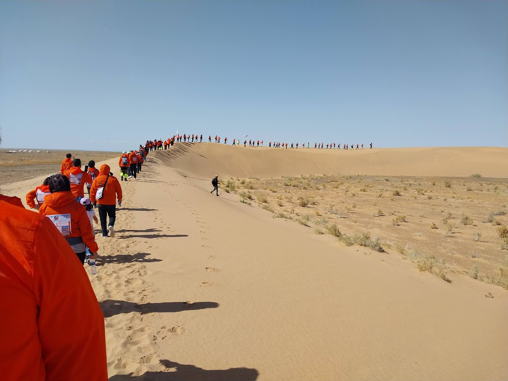
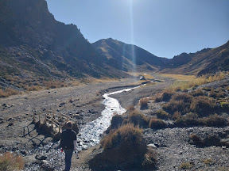

Dalanzadgad, also refered to as DZ, is the main city in the southern gobi province. It is known for dinosaurs and the many fossils found.
During a walking gobi event, a lot of people from Mongolia, Russia, China, and more bussed to the sand dunes to walk on this sand dune ridge and ride a camel. Many of them continued this trek for a couple days.

Nearby the city is a mountain that you can drive through to hike. There is a river that cuts through it.

To get to Dalanzadgad, we had to take a 12 hour taxi ride in a van. Some parts of the road are unfinished so there is a lot of off roading.